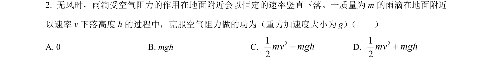
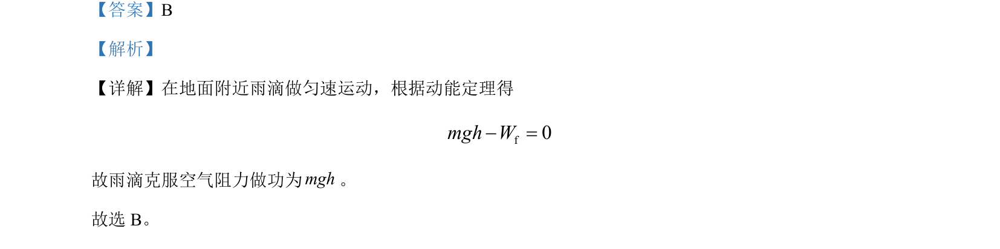

考点：动能定理 功 匀速直线运动
动能定理
功
匀速直线运动

雨滴匀速下落时，利用动能定理求克服空气阻力做功的大小。

📄 原 PDF 第 1 页：素材/真题/吉林/2008-2024·（吉林）物理高考真题/2023年高考物理试卷（新课标）（解析卷）.pdf
素材/真题/吉林/2008-2024·（吉林）物理高考真题/2023年高考物理试卷（新课标）（解析卷）.pdf
【答案】B 【解析】 【详解】在地面附近雨滴做匀速运动，根据动能定理得 f0mgh W- = 故雨滴克服空气阻力做功为mgh。 故选 B。